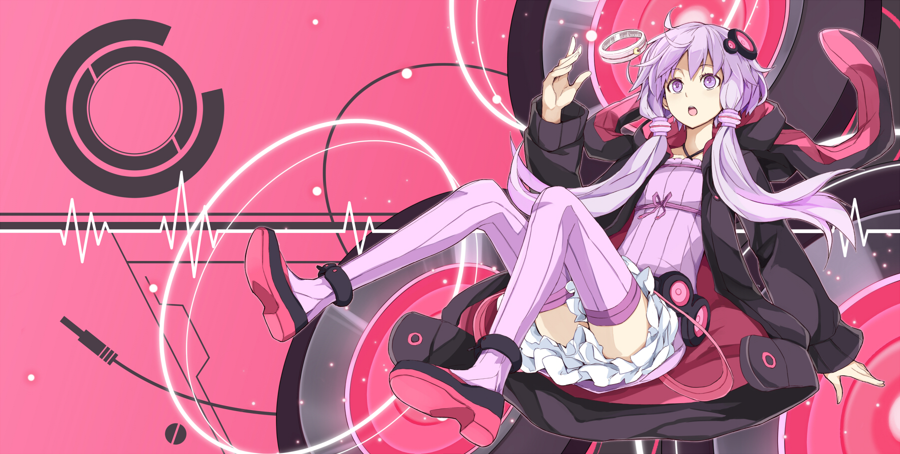

|  |
ゆづきゆかり/ Yuzuki YukariVOCALOMAKETS의 기획을 통해 AH-Software가 개발한 VOCALOID3 대응 소프트웨어이자 VOICEROID+ 대응 소프트웨어, 그리고 이 둘의 이미지 캐릭터. 목소리 제공자는 이시구로 치히로이며 캐릭터 디자인은 늑대와 향신료의 일러스트레이터로 유명한 아야쿠라 쥬우(文倉十)가 맡았다. 디자인 컨셉은 토끼이며 메인 컬러는 연보라색과 검정색. VOCALOID(보컬로이드)인 'VOCALOID3 유즈키 유카리'와 VOICEROID(보이스로이드)인 'VOICEROID+ 유즈키 유카리'까지 해서 2종류의 제품이 2011년 12월 22일 동시에 발매되었다. 유즈키 유카리(結月ゆかり)라는 이름은 'VOCALOID와 인연이 있는 사람들이 소리(月)를 잇는다(結ぶ)'라는 문장에서 유래되었으며 영어로는 'She unites you all with her voice'라고 되어 있다. VOICEROID(보이스로이드)로도 발매되었다는 점은 특기할 만한 부분인데, VOCALOID면서 VOICEROID인 경우는 유즈키 유카리가 사상 최초. VOCALOID 유즈키 유카리와 VOICEROID 유즈키 유카리는 양 제품의 자켓 일러스트의 후드 착용 유무로 쉽게 구별할 수 있다. VOCALOID판은 후드를 벗고 있고 VOICEROID판은 후드를 쓰고 있는 식. VOCALOID 제품에는 VOCALOID3 라이브러리 외에도 추가 음성인 exVOICE가 동봉되어 있어, 호흡이나 카운트, 스크림 등을 표현할 수 있다. 그 수는 모두 합쳐 1283개 이상. 실제로 유카리를 사용하는 프로듀서들은 exVOICE 기능을 유용하게 사용하고 있다. 또한 양 제품에는 편집한 음성 데이터에 맞추어 사진이나 일러스트의 표정을 움직이게 할 수 있는 CrazyTalk5 SE가 동봉되어 있다. 단 exVOICE에 대해서는 주로 실황자들 사이에서 불만이 많은 편인데, 실제로 ex보이스 목록을 들어보면 알겠지만 보이스로이드와 보컬로이드를 섞는 혼합곡이 아닌 이상 끼워넣기 어려운 느낌의 대사가 태반이고, 정작 쿄마치 세이카와 도호쿠 키리탄은 보이스로이드 구입 시 ex보이스가 포함되어 있지만 유즈키 유카리의 보이스로이드는 보컬로이드를 구매하거나 단독 ex보이스 다운로드판을 구입하지 않으면 구할 수 없다는 게 문제점. |